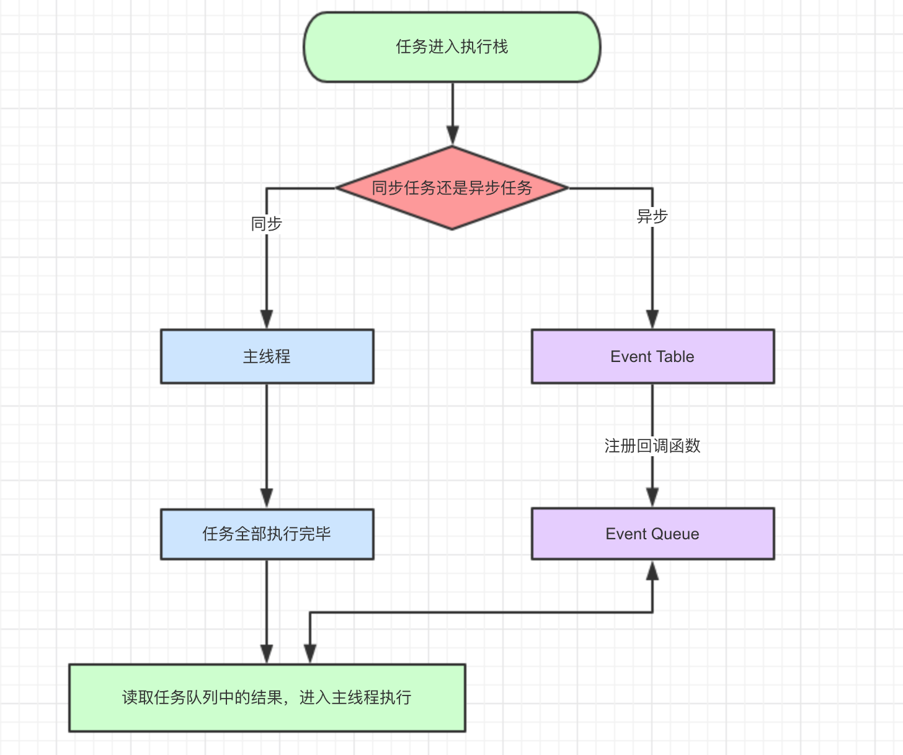

jS中，任务分为两种，一是同步任务，一是异步任务。只有当主线程上的同步任务执行完毕，
才会执行任务队列中的异步任务。而任务队列中的异步任务又可以分为microtask和macrotask。
而JS引擎对同步任务和异步任务的执行顺序是这样的。
1. macrotask(外链script文件，执行同步任务)
2. microtask(如Promise对象的回调函数, 即then方法)
3. macrotask(如各种事件处理程序，Ajax，setTimeout、setInterval等)
4. microtask
5. macrotask
...
如此循环，就构成了一个事件循环（Event Loop）机制。回到题目中，for循环属于同步任务，而各种事件处理程序是属于异步任务。
